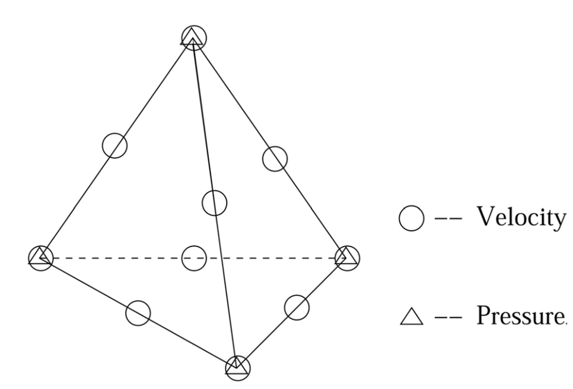

PoLarIS陆冰模式简介
PoLarIS是Polar Land Ice Simulator的缩写，读音为“北极星”的英文发音，意思
是“极地陆冰模拟器”
，主要面向地球三极陆冰（南北极冰盖和亚洲高山区冰川）的动力学模拟。
目前，PoLarIS包括三个动力核心：浅冰近似、一阶近似和Stokes。一阶近似是目前开发和支持的重点。以下是控制方程、有限元离散及其变分以及并行计算的技术细节。
控制方程及边界条件
冰盖的动力学行为由具有非线性流变学的不可压粘性流体的Stokes方程建模，即假设非线性本构律。设 \([0, t_{\max}]\) 是我们感兴趣的时间段， \(\Omega_t\) 表示冰盖占据
的三维空间区域，则有动量守恒方程：
\[
\nabla\cdot\sigma+\rho\mathbf{g}=0\quad\mathrm{in}\quad\Omega_t\times[0,t_{\max}],
\]
质量守恒方程：
\[
\nabla\cdot\mathbf{u}=0\quad\mathrm{in}\quad\Omega_t\times[0,t_{\max}],
\]
其中\(\mathbf{u}=(u_x,u_y,u_z)^T\)表示速度，\(\sigma\)表示全应力张量，\(\rho\)表示冰的 密度，\(\mathbf{g}=(0,0,-g)\)表示重力加速度。应力张量\(\sigma\)可以分解为剪切力\(\tau\) 和各向同性的压力\(p\)，即，
\[
\sigma=\tau-p\mathbf{I}\quad\mathrm{or}\quad\sigma_{ij}=\tau_{ij}-p\delta_{ij},
\]
其中，\(p=-\frac13tr(\sigma)\)，\(\delta_{ij}\)是Kronecker记号。动量守恒方程为
\[
-\nabla\cdot\tau+\nabla p=\rho\mathbf{g}\quad\mathrm{in}\quad\Omega_t\times[0,t_{\max}].
\]
应变率张量 \(\dot{\varepsilon}_\mathbf{u}\) 定义为：
\[
\left(\dot{\varepsilon}_\mathbf{u}\right)_{ij}=\frac12{\left(\frac{\partial u_i}{\partial x_j}+\frac{\partial u_j}{\partial x_i}\right)}.
\]
剪切力张量 \(\tau\) 和应变率张量 \(\dot{\varepsilon}_\mathbf{u}\) 之间的关系由非线性的Glen冰流本构律给出：
\[
\tau=2\eta_\mathbf{u}\dot{\varepsilon}_\mathbf{u}
\]
其中，
\[
\eta_{\mathbf{u}} = \frac{1}{2}A^{-\frac{1}{n}}\dot{\varepsilon}_e^{\frac{1-n}{n}}
\]
其中，
\[
\dot{\varepsilon}_e = \left(\frac{1}{2}\dot{\varepsilon}_\mathbf{u}:\dot{\varepsilon}_\mathbf{u}\right)^{\frac{1}{2}}
\]
变形速率系数 \(A\) 通常与温度、压力和冰的其他性质有关，根据 Zhang 等（2001）的假设，本文认为 A 仅依赖于温度，即
\[
A = A_0\exp\left(-\frac{Q}{RT}\right)
\]
其中 \(A_0\) 是通常用作调谐参数的经验流动常数 \(Q\) 表示蠕变的活化能，\(R\) 表示通用气体常数，并且 \(T\) 表示以开尔文测量的绝对温度，
我们假设 \(A\) 是在整个空间一致的常数。
在冰盖的表面，对 \(\Gamma_s\) 施加边界条件
\[
\sigma\cdot\mathbf{n}=-p_{atm}\cdot\mathbf{n}\quad\text{on}\quad\Gamma_s
\]
其中，\(\mathbf{n}\) 表示冰盖边界的外法线单位向量，\(p_{atm}\) 表示大气压。因为大气压力相对于冰内的压力可以忽略不计，所以我们做了标准简化，\(p_{atm}=0\).
冰盖的底部可以分解成两部分：\(\Gamma_{b,fix}\) 表示冰盖固定在底部基岩上的部分，\(\Gamma_{b,sld}\) 表示冰盖底部可以滑动的部分。在底部边界的固定部分，我们施加零速度边界条件
\[
\mathbf{u}=0\quad\text{on}\quad\Gamma_{b,fix}
\]
这包含了无穿透条件 \(\mathbf{u}\cdot\mathbf{n}=0\) 和无滑动条件 \(\mathbf{u}\times\mathbf{n}=0\) .
\[
\mathbf{u}\cdot\mathbf{n}=0\quad\text{and}\quad\mathbf{n}\cdot\sigma\cdot\mathbf{t}=-\beta^2\mathbf{u}\cdot\mathbf{t}\quad\text{on}\quad\Gamma_{b,sld}
\]
变分问题
有限元离散建立在对微分方程的变分问题上。用 \(L^2(\Omega_t)\)表示 \(\Omega_t\) 上的平方可积函数空间，\(\mathbf{H}^1(\Omega_t)\) 表示每个分量都是 \(H^1(\Omega_t)\) 的向量函数空间，即每个分量都是 \(L^2(\Omega_t)\),且所有一阶导数也都是 \(L^2(\Omega_t)\) 的。
同时乘测试函数 \(\mathbf{v}\in\mathbf{H}^1(\Omega_t)\),然后在 \(\Omega_t\) 上积分，由Green公式有：
\[
\int_{\Omega_t}\tau:\nabla\mathbf{v}d\mathbf{x}-\int_{\Omega_t}p\nabla\cdot\mathbf{v}d\mathbf{x}-
\int_{\Gamma}\mathbf{n}\cdot\sigma\cdot\mathbf{v}ds = \rho\int_{\Omega_t}\mathbf{g}\cdot\mathbf{v}d\mathbf{x}.
\]
其中，\(\Gamma=\Gamma_s\cup\Gamma_b\cup\Gamma_l,\quad\tau:\nabla\mathbf{v}\) 表示张量 \(\tau\) 和 \(\nabla\mathbf{v}\)
对应元素相乘再求和。我们使用Einstein求和记号，即重复指标表示求和，
并记 \(v_{i,j}=\frac{\partial v_i}{\partial x_j}\),
则 \(\tau:\nabla\mathbf{v}=\tau_{ij}v_{i,j}\).由应力张量 \(\tau\) 的对称性，
我们有 \(\tau_{ij}v_{i,j}=\tau_{ji}v_{j,i}=\tau_{ij}v_{j,i}\). 所以有
\[
\tau_{ij}v_{i,j}=\frac{1}{2}\tau_{ij}(v_{i,j}+v_{j,i})=\tau_{ij}(\dot{\varepsilon}_{\mathbf{v}})_{ij}=2\eta_{\mathbf{u}}(\dot{\varepsilon}_{\mathbf{u}})_{ij}(\dot{\varepsilon}_{\mathbf{v}})_{ij}.
\]
因此有：
\[
\int_{\Omega_t}\tau:\nabla\mathbf{v}d\mathbf{x} = \int_{\Omega_t}2\eta_{\mathbf{u}}\dot{\varepsilon}_{\mathbf{u}}:\dot{\varepsilon}_{\mathbf{v}}d\mathbf{x}.
\]
我们假设 \(p_{atm}=0\),因此有
\[
\int_{\Gamma_s}\mathbf{n}\cdot\sigma\cdot\mathbf{v}ds = 0.
\]
若在 \(\Gamma_l\) 上施加边界条件([eq:4]),则也有
\[
\int_{\Gamma_l}\mathbf{n}\cdot\sigma\cdot\mathbf{v}ds = 0.
\]
在无滑动边界 \(\Gamma_{b,fix}\)，我们要求测试函数满足 \(\mathbf{v}=0\),因此有
\[
\int_{\Gamma_{b,fix}}\mathbf{n}\cdot\sigma\cdot\mathbf{v}ds = 0.
\]
在滑动边界 \(\Gamma_{b,sld}\) 上，因为 \(\mathbf{u}\cdot\mathbf{n}=0\),因此我们要求测试函数满足 \(\mathbf{v}\cdot\mathbf{n}=0\) .
结合摩擦定律，我们有
\[
\int_{\Gamma_{b,sld}}\mathbf{n}\cdot\sigma\cdot\mathbf{v}ds = -\int_{\Gamma_{b,fix}}\beta^2\mathbf{u}\cdot\mathbf{v}ds.
\]
记
\[
\tilde{\mathbf{H}}(\Omega_t)=\{\mathbf{u}\in\mathbf{H}^1(\Omega_t):\mathbf{u}\vert_{\Gamma_l\cup\Gamma_{b,fix}}=0,(\mathbf{u}\cdot\mathbf{n})\vert_{\Gamma_{b,sld}}=0\}.
\]
我们就得到Stokes方程组的弱形式：
\[
\begin{cases}
\int_{\Omega_t}2\eta_{\mathbf{u}}\dot{\varepsilon}_{\mathbf{u}}:\dot{\varepsilon}_{\mathbf{v}}\,d\mathbf{x}
+\int_{\Gamma_{b,fix}}\beta^2\mathbf{u}\cdot\mathbf{v}\,ds
-\int_{\Omega_t}p\nabla\cdot\mathbf{v}\,d\mathbf{x}
= \rho\int_{\Omega_t}\mathbf{g}\cdot\mathbf{v}\,d\mathbf{x} \\
-\int_{\Omega_t}q\nabla\cdot\mathbf{u}\,d\mathbf{x}=0
\end{cases}
\]
高阶精确有限元离散
四面体网格剖分
格陵兰和南极冰盖的几何形状具有高度的各向异性，水平尺度与垂直尺度之比介于 \(100:1\)到\(1000:1\)之间。
此外，在冰盖的大部分地区，水平方向变量的变化比垂直方向的变化小得多。因此，使用三维各向同性网格来离散各向异性的几何区域会产生大量的网格点，更多的自由度是必要的。因此，当获得自由度相对较少的高阶精确解时，需要计算网格的各向异性。
除了冰盖边界附近和集中流动区域（例如冰流和出口冰川），解应该在水平方向上的变化比在垂直方向上的变化要慢得多。所以在
冰盖的大部分区域上，在水平方向上可以有较大的网格间距，因为在这些区域，解大多是缓慢变化的。另外需要注意的是，
缩放垂直坐标可以改善区域的纵横比，但是也会改变偏微分方程中的系数，因此物理纵横比在离散系统中仍然会出现，所以仅仅靠缩放
垂直坐标无法避免冰盖的高纵横比。
冰盖的高纵横比需要构造高纵横比的各向异性网格，为了避免生成低质量网格，在四面体网格生成中需要特殊的技巧。我们首先
对冰盖的水平尺度 \(\Omega_H\) 生成较高质量的二维三角形网格，记作 \(\mathcal{Q}_h\).然后，通过添加描述冰厚的 \(z\) 坐标，将二维网格转换为覆盖整个冰盖区域的三角形网格，在冰盖顶面是三角形。然后，在竖直方向将每个三棱柱分成相同数量
的三棱柱，从而生成冰盖区域 \(\Omega_t\) 的完全三维、分层、棱柱形网格。最后，我们通过将每个棱柱单元分解
为三个四面体来获得冰盖的四面体网格。
Stokes方程的有限元离散
记 \(\mathcal{T}_h\) 是上一节所讨论的冰盖区域四面体网格剖分，这里 \(h\) 表示对网格尺寸的一种刻画，比如说所有四面体单元
内切球直径的最大值。使用有限元空间 \(P_{1,h}(\mathcal{T}_h)\) 来逼近压强，\(P_{1,h}(\mathcal{T}_h)\) 表示\(\mathcal{T}_h\) 上的分片线性多项式，即，在每个四面体单元上，函数形如 \(a_0+a_1x+a_2y+a_3z\),其中 \(a_i,(i=0,1,2,3)\) 是常数。这样的有限元函数
能够被它在四面体四个顶点的取值唯一确定。对速度分量的有限元逼近，我们选择更高阶的有限元空间 \(P_{2,h}(\mathcal{T}_h)\)，在每个四面体单元上是二次函数，
即 \(b_0+b_1x+b_2y+b_3z+b_4x^2+b_5y^2+b_6z^2+b_7xy+b_8yz+b_9zx\),其中 \(b_i,(i=0,\cdots,9)\) 是常数，这样的函数能被它在四面体
四个顶点和六条棱的中点的取值唯一确定。

因此，给定\(\Omega_t\)和\(\mathcal{T}_h\),变分问题离散为：求解\(\mathbf{u}_h\in\tilde{\mathbf{P}}_{2,h}(\mathcal{T}_h)\)
和\(p_h\in P_{1,h}(\mathcal{T}_h)\),使得
\[
\begin{cases}
\int_{\Omega_t}2\eta_{\mathbf{u}_h}\dot{\varepsilon}_{\mathbf{u}_h}:\dot{\varepsilon}_{\mathbf{v}_h}\,d\mathbf{x}
+\int_{\Gamma_{b,fix}}\beta^2\mathbf{u}_h\cdot\mathbf{v}_h\,ds
-\int_{\Omega_t}p_h\nabla\cdot\mathbf{v}_h\,d\mathbf{x}
=\rho\int_{\Omega_t}\mathbf{g}\cdot\mathbf{v}_h\,d\mathbf{x}\\
-\int_{\Omega_t}q_h\nabla\cdot\mathbf{u}_h\,d\mathbf{x}=0
\end{cases}
\]
不使用更高阶元有几个原因，比如解可能没有足够的光滑性来保证额外的精度。最重要的原因是，对于真实的冰盖
形状，边界条件是给定的一些离散点上的值，并且边界可能是极其不规则的。最后，缺乏对边界几何的
准确把握是决定求解精度的一个限制因素，因此高阶元不一定有用。
Picard线性化
我们使用Picard线性化算法来求解非线性系统，更复杂的线性化算法比如牛顿法或拟牛顿法通常会有更快的收敛阶，但是这些方法需要更好的初值，即初值要足够靠近解，才能有更快的收敛速度，因此，这类方法通常以Picard线性化算法几步后的解作为初值。
Picard线性化算法将依赖于速度的粘性系数 \(\eta_{\mathbf{u}_h}\) 滞后，在每一步Picard迭代中，\(\eta_{\mathbf{u}_h}\) 使用上一步迭代速度的近似解来估计。因此，给定速度初值\(\mathbf{u}_h^{(0)}\)（通常取为0，此时 \(\eta_{\mathbf{u}_h}\) 是一个正常数），就可以通过不断求解线性方程组来获得速度 \(\mathbf{u}_h^{(j)}\)和压强n\(p_h^{(j)}\).
\[
\begin{cases}
\int_{\Omega_t}2\eta_{\mathbf{u}_h^{(j-1)}}\dot{\varepsilon}_{\mathbf{u}_h^{(j)}}:\dot{\varepsilon}_{\mathbf{v}_h}\,d\mathbf{x}
+\int_{\Gamma_{b,fix}}\beta^2\mathbf{u}_h^{(j)}\cdot\mathbf{v}_h\,ds
-\int_{\Omega_t}p_h^{(j)}\nabla\cdot\mathbf{v}_h\,d\mathbf{x}
=\rho\int_{\Omega_t}\mathbf{g}\cdot\mathbf{v}_h\,d\mathbf{x}\\
-\int_{\Omega_t}q_h\nabla\cdot\mathbf{u}_h^{(j)}\,d\mathbf{x}=0
\end{cases}
\]
当残差满足条件时，迭代终止，并令 \(\mathbf{u}_h=\mathbf{u}_h^{(j)}\),通过简单的启发式渐近分析可知，Picard迭代是线性收敛的，
且压缩常数为 \(\frac{n-1}{n}\)，其中 \(n\) 表示Glen流动定律中的指数。
在每一步Picard迭代中，线性有限元问题([eq:13])等价于一个对称鞍点问题：
\[
\begin{pmatrix}
F & B^T \\
B & 0
\end{pmatrix}
\begin{pmatrix}
\vec{\mathbf{u}} \\
\vec{p}
\end{pmatrix}=
\begin{pmatrix}
\vec{\mathbf{r}} \\
0
\end{pmatrix}
\]
其中 \(\vec{\mathbf{u}},\vec{p}\) 分别表示速度和压强的自由度。
滑动边界上无穿透条件的实现
在滑动边界 \(\Gamma_{b,sld}\) 上，我们需要实现无穿透条件 \(\mathbf{u}\cdot\mathbf{n}=0\).这个条件难以处理是因为
通常涉及速度的三个分量的线性组合。我们的处理方式是在滑动边界上每一个速度结点处进行坐标旋转：使得旋转后的坐标系有一个轴
与边界垂直，另外两个轴与边界相切。在这个新的坐标系中，无穿透边界条件是容易实现的。
用 \(M\) 表示所有速度结点的个数，则速度向量有 \(3M\) 个自由度。那么速度自由度 \(\vec{\mathbf{u}}\) 可以记作
\[
\vec{\mathbf{u}}=\begin{pmatrix}\mathbf{u}_{1}\\ \vdots\\\mathbf{u}_{M}\end{pmatrix}
\]
其中 \(\mathbf{u}_i=(u_{ix},u_{iy},u_{iz})^T\) 表示第 \(i\) 个速度结点的速度向量。滑动边界上的无穿透条件可以写成
\[
\mathbf{u}_k\cdot\mathbf{n}_k=0,\quad\forall k\in\sigma_{b,sld}.
\]
其中 \(\sigma_{b,sld}\) 表示滑动边界上的速度结点集合。
对任意的滑动边界上的自由度 \(k\in\sigma_{b,sld}\)，我们有局部坐标系 \((\mathbf{n}_k,\mathbf{t}_k^1,\mathbf{t}_k^2)\),其中 \(\mathbf{n}_k\) 是单位外法向量，\(\mathbf{t}_k^1,\mathbf{t}_k^2\) 是与边界相切的两个单位向量。记
\[
T_k = (\mathbf{n}_k,\mathbf{t}_k^1,\mathbf{t}_k^2).
\]
对于不在滑动边界上的自由度，定义 \(T_k=I\),其中 \(I\) 是 \(3\times 3\) 的单位矩阵。
则有
\[
T=\begin{pmatrix}T_1&&\\&\ddots&\\&&T_M\end{pmatrix}.
\]
\(T\) 是正交矩阵，我们得到
\[
\begin{pmatrix}
\tilde{F} & \tilde{B}^T \\
\tilde{B} & 0
\end{pmatrix}
\begin{pmatrix}
\vec{\tilde{\mathbf{u}}} \\
\vec{p}
\end{pmatrix}=
\begin{pmatrix}
\vec{\tilde{\mathbf{r}}} \\
0
\end{pmatrix}
\]
其中，
\[
\widetilde{F}=TFT^{T},\quad{\widetilde{B}}=BT^{T},\quad{\vec{\widetilde{\mathbf{u}}}}=T\vec{\mathbf{u}},\quad{\vec{\widetilde{\mathbf{r}}}}=T\vec{\mathbf{r}}.
\]
现在把\(\vec{\widetilde{\mathbf{u}}}\)当作未知数，注意到
\[
\vec{\widetilde{\mathbf{u}}}_{k}=\begin{pmatrix}\mathbf{n}_{k}\cdot\mathbf{u}_{k},
\mathbf{t}_{k}^{1}\cdot\mathbf{u}_{k},
\mathbf{t}_{k}^{2}\cdot\mathbf{u}_{k}\end{pmatrix}^{T}=
\begin{pmatrix}0,\mathbf{t}_{k}^{1}\cdot\mathbf{u}_{k},
\mathbf{t}_{k}^{2}\cdot\mathbf{u}_{k}\end{pmatrix}^{T}\quad\forall k{\in}\sigma_{b,sld}.
\]
则对应于无穿透条件，只需令每个 \(\vec{\widetilde{\mathbf{u}}}_{k}\) 的第一个分量为0。
线性方程组求解
在数值模拟中为了获得较高的分辨率，从有限元离散中得到的大型稀疏线性方程组可能含有上百万个未知数。求解这样的
线性方程组对机器的算力和内存有很高的要求。以Krylov子空间方法（例如GMRES和CG）和预处理技巧（例如分块预优矩阵、多重网格
和不完全LU分解）为基础的迭代法只需要进行矩阵向量乘法的计算，因此最为常用。我们使用并行化预处理迭代方法来求解线性方程组
预处理器
考虑系数矩阵的分块分解，我们有
\[
\begin{pmatrix}
\widetilde{F} & \widetilde{B}^{\top} \\
\widetilde{B} & 0
\end{pmatrix}=
\begin{pmatrix}
I & 0 \\
\widetilde{B}\widetilde{F}^{-1} & I
\end{pmatrix}
\begin{pmatrix}
\widetilde{F} & \widetilde{B}^{\top} \\
0 & -S
\end{pmatrix}
\]
其中，\(S=\widetilde{B}\widetilde{F}^{-1}\widetilde{B}^{T}\) 是Schur补。
\[
\begin{pmatrix}\widetilde{F}&\widetilde{B}^{T}\\0&-S\end{pmatrix}
\]
是一个很理想的预处理矩阵。实际上，使用该预优矩阵的GMRES方法最多两次迭代就能够收敛。
然而，把上式作为GMRES等迭代法的预优矩阵需要做该预优矩阵的逆和向量的乘法，该矩阵的逆为
\[
\begin{pmatrix}
\widetilde{F}^{-1}&\widetilde{F}^{-1}\widetilde{B}^TS^{-1}\\
0&-S^{-1}
\end{pmatrix}=
\begin{pmatrix}
\widetilde{F}^{-1}&0\\
0&I
\end{pmatrix}
\begin{pmatrix}
I&-\widetilde{B}^T\\
0&I
\end{pmatrix}
\begin{pmatrix}
I&0\\
0&-S^{-1}
\end{pmatrix}
\]
为了避免计算 \(S^{-1}\)，我们使用加权质量矩阵 \(M_{\eta}\) 来替代 \(S^{-1}\)，
\[
(M_{\eta})_{i,j}=\int_{\Omega_{t}}(\eta_{\mathbf{u}_{h}^{(j-1)}})^{-1}\phi_{i}\phi_{j}d\mathbf{x}.
\]
其中 \(\phi_{i}\) 是压强的基函数。因此，我们可以使用下面的矩阵
\[
\begin{pmatrix}
\widetilde{F}^{-1}&\widetilde{F}^{-1}\widetilde{B}^TM_\eta^{-1}\\
0&-M_\eta^{-1}
\end{pmatrix}=
\begin{pmatrix}
\widetilde{F}^{-1}&0\\
0&I
\end{pmatrix}
\begin{pmatrix}
I&-\widetilde{B}^T\\
0&I
\end{pmatrix}
\begin{pmatrix}
I&0\\
0&-M_\eta^{-1}
\end{pmatrix}
\]
作为预优矩阵的逆的一个近似。只需求解下面的预优线性方程组
\[
\begin{pmatrix}
\widetilde{F} & \widetilde{B}^T \\
\widetilde{B} & \mathbf{0}
\end{pmatrix}
\begin{pmatrix}
\widetilde{F}^{-1} & \widetilde{F}^{-1}\widetilde{B}^TM_\eta^{-1} \\
\mathbf{0} & -M_\eta^{-1}
\end{pmatrix}
\begin{pmatrix}
\vec{\widetilde{\mathbf{v}}} \\
\vec{q}
\end{pmatrix}
=
\begin{pmatrix}
\vec{\widetilde{\mathbf{r}}} \\
0
\end{pmatrix}
\]
得到 \(\vec{\widetilde{\mathbf{v}}},\vec{q}\) ,然后令
\[
\begin{pmatrix}\vec{\widetilde{\mathbf{u}}}\\\vec{p}\end{pmatrix}=
\begin{pmatrix}
\widetilde{F}^{-1}
&
\widetilde{F}^{-1}\widetilde{B}^{T}M_{\eta}^{-1}
\\
\mathbf{0}
&
-M_{\eta}^{-1}
\end{pmatrix}
\begin{pmatrix}
\vec{\widetilde{\mathbf{v}}}\\
\vec{q}
\end{pmatrix}
\]
并行化
并行计算通常使用分而治之的策略来解决大规模问题。我们采用区域分解方法(DDM)
用于系数矩阵的构造和分布式计算机处理器上的局部预处理。首先将有限元网格划分为若干个子网格，在并行时每个处理器计算一个子网格。这样
就把整个区域上的问题分解为若干个相交子区域上的问题，而子区域上的问题会相对简单。我们只在水平方向使用“METIS”进行网格划分。
基于这种划分方法，我们并行化了求解算法中的所有步骤，包括作为该算法一部分的两个GMRES
迭代中遇到的所有矩阵向量乘法。我们使用AMG预处理的GMRES方法作为求解的核心步骤。在我们的并行实现中使用了
并行AMG求解器BoomerAMG。BoomerAMG具有很大的灵活性，可以在各种并行粗化策略和不同的插值算子之间进行选择。
我们采用消息传递接口(MPI)作为并行环境。如上所述，在我们的实现中，我们在两个地方使用了GMRES方法
以及块预处理和AMG预处理技术来求解；特别地，由于其可靠性和鲁棒性，我们在并行实现中采用了流行的软件包PETSc.